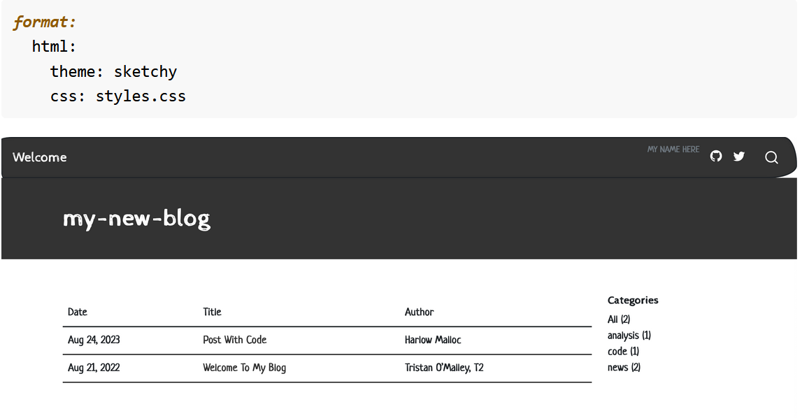

Quarto
Met Quarto ben je in staat om inhoud en code naar verschillende wetenschappelijke producten om te zetten. Dat kunnen artikelen, rapporten, boeken, websites of b.v. dashboards zijn. Met Quarto kun je ook een blog maken. Hier laat ik jullie zien hoe je zo’n blog kunt maken. Om meer over Quarto te leren verwijs ik je naar de uitgebreide Quarto-website. Ondertussen heb ik verschillende blogs/websites en boeken met Quarto gemaakt, waaronder: - Mijn eigen website
TT_blog
Dit is overigens het blog dat ik met Quarto heb gemaakt TT-blog, het eindresultaat van deze tutorial. Al het materiaal (teksten, plaatjes, ondersteunend materiaal) vind je op Github. Op 4 april geef ik er een NSC-R workshop over. Die presentatie zal hier komen te staan.
Presentatie over Quarto Blog
Over deze blog maken met Quarto heb ik een aparte presentatie gemaakt. Het resultaat vind je hier. Op GitHub heb ik deze presentatie geplaatst, hier
Achtergrond van TT_blog
De NSC-R werkgroep organiseert regelmatig bijeenkomsten om medewerkers en betrokkenen te informeren over ontwikkelingen op het terrein van moderne data-analyse met inzet van het programma R. Het werk van deze werkgroep vind je op NSC-R Workshops.
Onderdeel van deze workshops zijn NSC-R Tidy Tuesday-bijeenkomsten. Iemand leidt mensen door een bepaald analysescript en laat zo zien wat en hoe je de analyse met R kunt uitvoeren. In de periode januari 2022-januari 2023 zijn er tien verschillende van deze bijeenkomsten georganiseerd. In enkele stappen heb ik elk van deze workshopteksten naar tien posts van dit blog omgezet en ik heb er een about-pagina aan toegevoegd met achtergrondinformatie over de workshops. Het blog heb ik als product via internet gepubliceerd. Een aantal stappen zijn essentieel:
Allereerst heb ik op GitHub een repository geopend (Repository op GitHub).
Vervolgens heb ik het blogformat van
Quartobinnengehaald en dat als uitgangspunt voor dit blog genomen. Vervolgens heb ik van de diverse workshopteksten posts gemaakt, ik heb er een about-pagina mert achtergrondinformatie aan toegevoegd (Open Quartoblog).Al deze documenten heb ik vervolgens binnen de repository van GitHub geplaatst (Werken vanaf GitHub).
Daarna heb ik de opmaak nog wat aangepast (Opmaak).
Als je het project als repository op GitHub hebt staan, kun je het product vervolgens via
Netlifypubliceren (Publiceren).
Hieronder ga ik wat uitgebreider op de vijf stappen in.
1. Repository op GitHub
Vaak begint een project met het openen van een repository op GitHub. Probeer zo veel mogelijk vanuit GitHub te werken. Jouw laatste versies zijn dan veilig opgeborgen en in principe kun je zo mogelijk makkelijk en goed met anderen samenwerken.
## 2. Open Quartoblog
Quarto is de nieuwe versie van R Markdown, het populaire pakket van R om wetenschappelijk te kunnen schrijven. R Markdown is er nu tien/twaalf jaar en blijft bestaan (ook ik zal het blijven gebruiken). Echter, Quarto heeft enkele kenmerken dat deze innovatie interessant maakt. Een van de voordelen is b.v. dat je er niet alleen in RStudio mee kunt werken maar ook met Python of VS Code. In deze tutorial wordt gebruik gemaakt van RStudio. In de nieuwe versies van RStudio is Quarto al opgenomen (dus dat hoef je niet apart te installeren). Als je met R Markdown werkt moet je steeds een ander pakket binnenhalen (voor het maken van een blog weer een ander pakket dan voor een boek). Bij Quarto hoef je dat niet steeds te doen. Nog een ander voordeel, ook het werken met Quarto zelf heeft enkele voordelen (bv dat je snel kunt wisselen tussen resultaat (Visual) en code (Soure) bv).

Quarto-documenten sla je op als .qmd-documenten.Verder werkt het veelal het zelfde als .rmd-documenten. Ook dit systeem werkt met Markdown tekst. De code chunks schrijf je wel net wat anders.Je begint {r} en de opdracht zet je eronder met #| zols hieronder.
#| warning: false
#| echo: true
#| label: fig-agecat
#| fig-cap: "Age categories and their numbers"
#| cap-location: marginUitgebreide informatie vind je over Schrijven en coderen op de website van Quarto. Je kunt ook de teksten van het boek nemen en zien hoe ik dit heb gedaan.
Net als andere wetenschappelijke producten (zoals artikelen, rapporten, boeken) kun je er ook een blog mee maken. Voor deze tutorial heb ik een eenvoudig blog gemaakt. Crëeer eerst binnen RStudio een nieuw project en kies voor New Directory.
Vervolgens kies je voor Quarto Blog.
En dit blog geef je dan een naam, in ons geval TT_blog
Als je dit project opent, zie je dat er verschillende bestanden zijn binnengehaald.
Als je dit project vervolgens opent en het document index.qmdrendert, zal het bestand _site worden toegevoegd.
Als je dan _site/index.html opent, zie je het resultaat.
Dit project heb ik als uitgangspunt genomen en vervolgens heb ik de tien workshopsbestanden toegevoegd en achtergrondinformatie gegeven over het project in de about-file. Dat moet je steeds stap voor stap doen. Maar hier zie je hoe de projectmap er uiteindelijk uitziet.
Zo ziet dan dan de structuur van het blog eruit. Over andere zaken zal ik straks nog wat bij de opmaak opmerken
3. Vanuit GitHub werken
Ook voor deze klus is het belangrijk dat je vanaf GitHub werkt. Dat is het versie controle programma waarover ik al eens vaker heb geschreven.Zie bijvoorbeeld hier. Het is belangrijk om stap voor stap te kunnen werken, om alles goed bij te houden (versie-controle), eventueel met anderen in het project te kunnen samenwerken, maar ook om het eindproduct te kunnen communiceren.
Het is natuurlijk goed als je vanaf het begin het project in GitHub hebt opgeslagen. In dat geval begin je met het openen van een nieuwe repository om GitHub, koppel je het met jouw lokale projectmap en voeg je er nieuwe bestanden aan toe. Je zorgt steeds dat de nieuwste versie op GitHub staat. Je moet dan wel een account daar hebben.
Het kan ook zijn dat je het project al op jouw lokale computer hebt staan en het vervolgens op GitHub moet plaatsen. In dat geval kun je ook het pakket usethis gebruiken. [Usethis](https://usethis.r-lib.org/. Dat pakket moet je dan wel hebben geinstalleerd en geöpend in de projectmap van het boek.
Start met het commando
usethis::use_git()Hij vraagt dan of je commit your changes toestaat en herstart dan RStudio en accepteer dit.
Geef dan het volgende commando om een Github repository te creëren om alles op GitHub op te slaan.
usethis::use_github()In mijn geval heb ik trouwens alle nieuwe bestanden met de hand in de GitHub repository geplaatst. Hoe je het ook doet, alles moet op in ieder geval op GitHub staan voordat je het blog kunt publiceren.
4. Opmaak
De stijl van het product kun je op verschillende manieren aanpassen. In Quarto zelf zitten er verschillende thema’s waar je voor kunt kiezen. In mijn geval heb ik voor cosmo gekozen. Dat vermeld je dan in het yml-bestand. Je kunt in datzelfde bestand ook lettergroottes, -types, achtergrondkleuren of andere stijlaspecten definiëren. Wat je ook kunt doen is een apart css-bestand toevoegen waarin je de stijl van, in dit geval boek, definieert. Ook over dit onderwerp zou veel meer te vertellen zijn, maar dat laat ik voor nu even zitten.

Voor de about-site heb je ook verschillende keuze

Je kunt de stijl ook nog ‘met de hand’ aanpassen.
5. Publiceren
Voor het publiceren van het blog heb ik het programma Netlifygebruikt. Ook hier moet je een account hebben (wel gratis net als GitHub). Vervolgens moet je ervoor zorgen dat ingelogd bent.
Zeg dan dat je een nieuwe site wilt openen.Bij het inloggen kun je het beste jouw GitHub account gebruiken. Verbind het met jouw GitHub account en kies jouw repository (in ons geval Quartoblog) die je wilt publiceren.
Kies jouw settings uit. In dit geval is _site de basisrepository en is _site/ de directory. Klik op deploy (publiceren).
Vervolgens kun je ook de naam veranderen (van de onbegrijpelijke Netlifynaam naar jouw herkenbare tt_blog naam).
En
De naam is dus veranderd in tt_blog en uiteindelijk is dit het adres geworden dat je van Netlify krijgt: https://tt-blog.netlify.app en dit is het resultaat
Tot slot
Het maken van een blog lijkt heel erg op het maken van een boek of een website (zie ook mijn blog van februari over het maken en verspreiden van een boek). Als je het een kunt, wordt het andere product makkelijker om te maken. Werk vanuit een project met verschillende mappen; zorg ervoor dat je altijd met GitHub werkt en doe alles stap voor stap. Begin met een klein project en werk het daarna uit. Om te publiceren heb ik tot nu toe met Netlify. Het moet ook met GitHub Pageskunnen. Quarto zelf heeft ook een eigen systeem om te publiceren (Quarto Pub) en dan is er nog Posit Connect en zijn er nog allerlei andere diensten waarmee je jouw producten onder de aandacht kunt brengen. Later zal ik nog eens een blog schrijven over deze mogelijkheden.